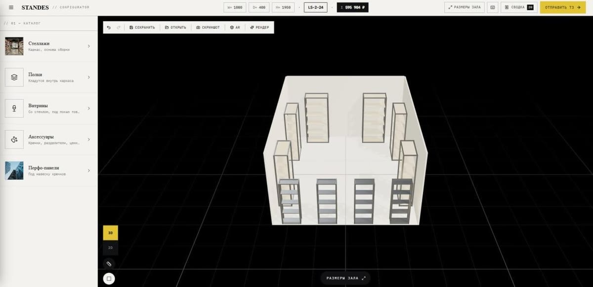

Standes
3D shelving configurator
The customer measures out the room, drops in racking, shelves and display cases, and the quote follows every change. The finished layout opens in AR on a phone, renders to an image, or goes to the factory as a brief — without a call to a sales rep.
Three.js · 3D and 2D views · AR · live pricing · export